这一节为什么这样简化
本节刻意不进入 float2、float4、half2 的代码实现。它只把判断链路讲稳：先拆总时间，再放大 kernel 内部，再算 AI，再用 Roofline 和 NCU 给出优化方向。具体动作留给第四节。
PPT 故事线
- 从能跑到跑得好：先说明为什么性能是成本、等待和体验问题。
- 从 CUDA 总耗时进入 H2D、kernel、D2H，再把 Device 内部放大为 read/compute/write。
- 建立 byte、FLOP、FLOPS、bandwidth、AI 的共同语言。
- 把 vector add 放进 Roofline，判断更像 memory-bound。
- 最后说明 NCU 如何把理论判断落到单 kernel 证据。
逐页讲课大纲
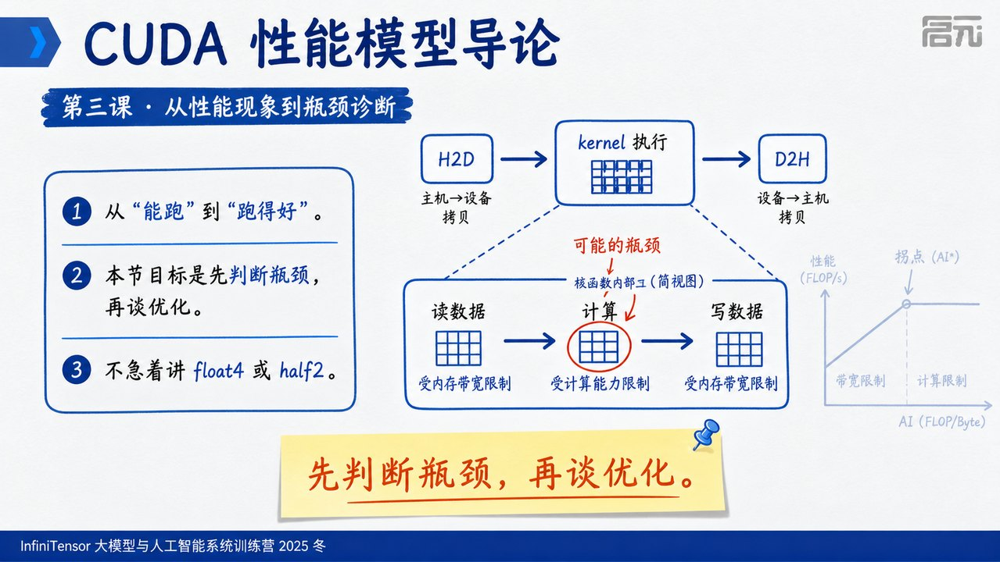
P01 · CUDA 性能模型导论
承接第二节
P01 · CUDA 性能模型导论
可以先说：“这一页先把‘CUDA 性能模型导论’讲清楚，后面的内容都从这个判断接出去。” 这一页要讲清楚：从“能跑”到“跑得好”。；本节目标是先判断瓶颈，再谈优化。；不急着讲 float4 或 half2。。
讲的时候按这条线推进：复用第二节的 H2D/kernel/D2H，不要重新讲代码迁移。 开场先立边界：第三节负责诊断语言和证据口径，不提前讲第四节的类型优化实现。 这里会碰到的概念有 CUDA, float2 / float4, half / FP16, half2 / __hadd2。
讲画面时，画面承担的作用：模板式封面，蓝色几何块 + 课程标题。。 不要让学生只看装饰，要指着图、代码或表格说明它在支撑哪一个判断。
这里要收住边界：float4 主要是访存组织和分量视图，不是 packed FP32 arithmetic。 收尾时可以说：“这页先解决到这里，下一页我们把问题接到这节课的路线。”
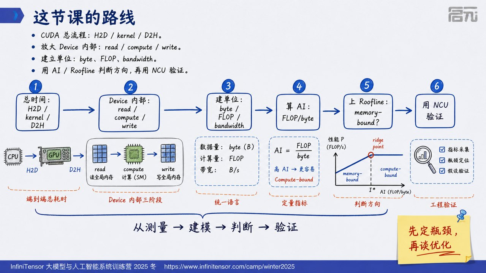
P02 · 这节课的路线
承接第二节
P02 · 这节课的路线
可以先说：“这一页先把‘这节课的路线’讲清楚，后面的内容都从这个判断接出去。” 这一页要讲清楚：CUDA 总流程：H2D / kernel / D2H。；放大 Device 内部：read / compute / write。；建立单位：byte、FLOP、bandwidth。；用 AI / Roofline 判断方向，再用 NCU 验证。。
讲的时候按这条线推进：复用第二节的 H2D/kernel/D2H，不要重新讲代码迁移。 开场先立边界：第三节负责诊断语言和证据口径，不提前讲第四节的类型优化实现。 这里会碰到的概念有 CUDA, Host / Device, kernel, NCU, byte / FLOP。
讲画面时，画面承担的作用：横向路线图。。 不要让学生只看装饰，要指着图、代码或表格说明它在支撑哪一个判断。
这里要收住边界：NCU 在这里是验证入口，不展开成完整工具课。 收尾时可以说：“这页先解决到这里，下一页我们把问题接到上节课已经解决什么。”
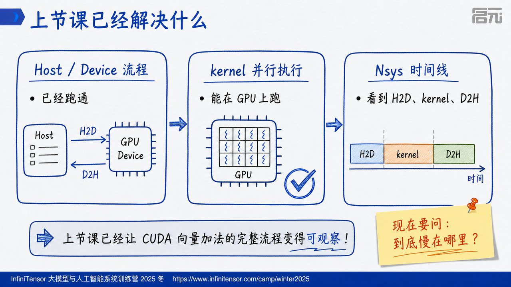
P03 · 上节课已经解决什么
承接第二节
P03 · 上节课已经解决什么
可以先说：“这一页先把‘上节课已经解决什么’讲清楚，后面的内容都从这个判断接出去。” 这一页要讲清楚：Host / Device 流程已经跑通。；kernel 能在 GPU 上并行执行。；Nsys 已经能看到 H2D、kernel、D2H。。
讲的时候按这条线推进：复用第二节的 H2D/kernel/D2H，不要重新讲代码迁移。 开场先立边界：第三节负责诊断语言和证据口径，不提前讲第四节的类型优化实现。 这里会碰到的概念有 并行, CPU / GPU 分工, Host / Device, kernel, Nsys。
讲画面时，画面承担的作用：三段流程卡片。。 不要让学生只看装饰，要指着图、代码或表格说明它在支撑哪一个判断。
这里要收住边界：Nsys 看系统时间线，不负责解释单个 kernel 的全部内部瓶颈。 收尾时可以说：“这页先解决到这里，下一页我们把问题接到正确性解决有没有，性能解决好不好。”
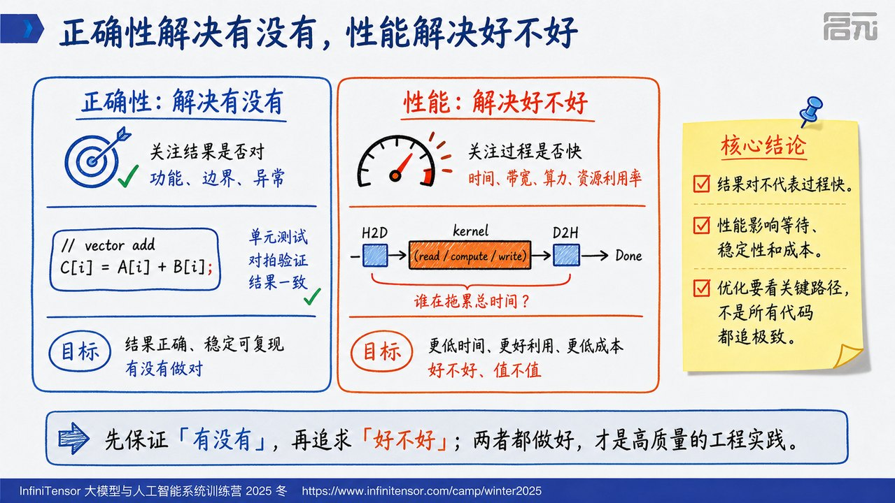
P04 · 正确性解决有没有，性能解决好不好
为什么性能值得讲
P04 · 正确性解决有没有，性能解决好不好
可以先说：“这一页先把‘正确性解决有没有，性能解决好不好’讲清楚，后面的内容都从这个判断接出去。” 这一页要讲清楚：结果对不代表过程快。；性能影响等待、稳定性和成本。；优化要看关键路径，不是所有代码都追极致。。
讲的时候按这条线推进：用 FPS 和调饮流程把抽象性能拉回体感和过程。 这里不需要额外展开新术语，重点是把页面角色讲清楚。
讲画面时，画面承担的作用：左右对照：正确性 vs 性能。。 不要让学生只看装饰，要指着图、代码或表格说明它在支撑哪一个判断。
这里要收住边界：不要把所有代码都说成要极致优化；要看关键路径和频率。 收尾时可以说：“这页先解决到这里，下一页我们把问题接到为什么不是只有 N 大才优化。”
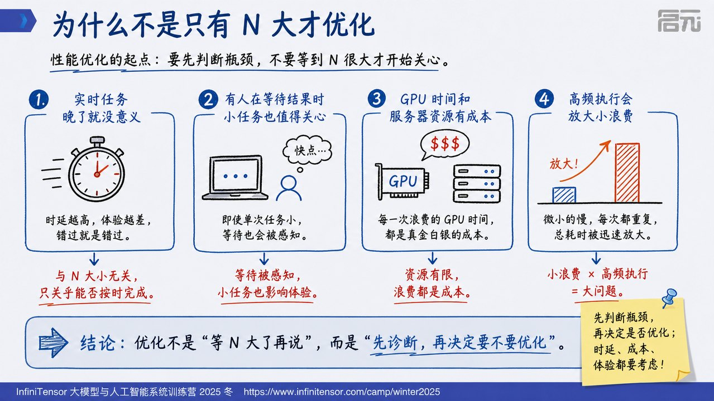
P05 · 为什么不是只有 N 大才优化
为什么性能值得讲
P05 · 为什么不是只有 N 大才优化
可以先问学生：“看到‘为什么不是只有 N 大才优化’，你们觉得真正卡住我们的是什么？” 这一页要讲清楚：实时任务晚了就没意义。；有人在等待结果时，小任务也值得关心。；GPU 时间和服务器资源有成本。；高频执行会放大小浪费。。
讲的时候按这条线推进：用 FPS 和调饮流程把抽象性能拉回体感和过程。 这里会碰到的概念有 CPU / GPU 分工。
讲画面时，画面承担的作用：决策 checklist。。 不要让学生只看装饰，要指着图、代码或表格说明它在支撑哪一个判断。
这里要收住边界：不要把所有代码都说成要极致优化；要看关键路径和频率。 收尾时可以说：“这页先解决到这里，下一页我们把问题接到FPS 不是表格数字。”
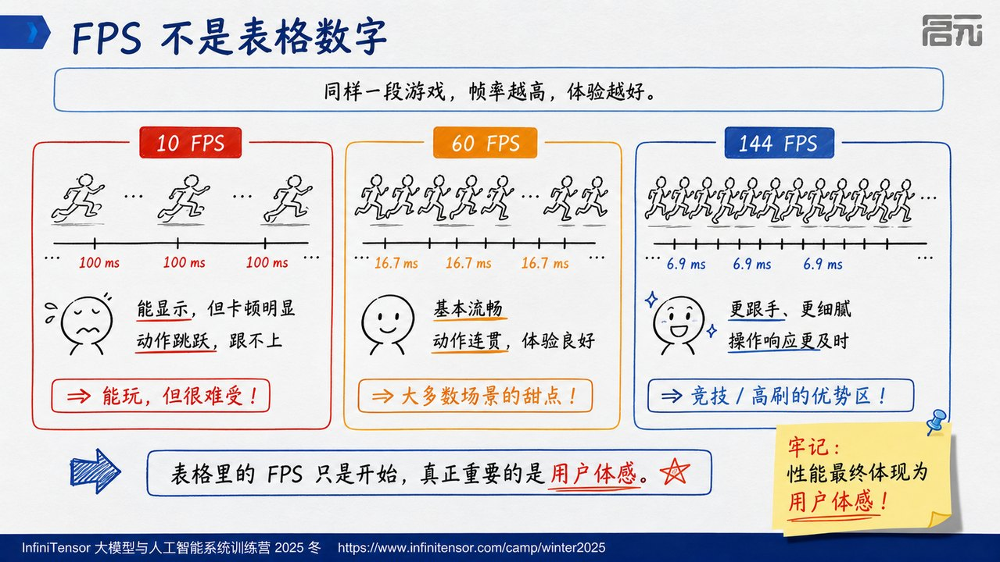
P06 · FPS 不是表格数字
为什么性能值得讲
P06 · FPS 不是表格数字
可以先说：“这一页先把‘FPS 不是表格数字’讲清楚，后面的内容都从这个判断接出去。” 这一页要讲清楚：10 FPS 能显示但卡顿。；60 FPS 基本流畅。；144 FPS 更跟手。；性能最终体现为用户体感。。
讲的时候按这条线推进：用 FPS 和调饮流程把抽象性能拉回体感和过程。 这里不需要额外展开新术语，重点是把页面角色讲清楚。
讲画面时，画面承担的作用：三段帧时间/体验对比图。。 不要让学生只看装饰，要指着图、代码或表格说明它在支撑哪一个判断。
这里要收住边界：不要把所有代码都说成要极致优化；要看关键路径和频率。 收尾时可以说：“这页先解决到这里，下一页我们把问题接到调饮流程：结果对但过程浪费。”
P07 · 调饮流程：结果对但过程浪费
为什么性能值得讲
P07 · 调饮流程：结果对但过程浪费
可以先说：“这一页先把‘调饮流程：结果对但过程浪费’讲清楚，后面的内容都从这个判断接出去。” 这一页要讲清楚：一杯饮料能喝等于结果正确。；多余走动、等待、返工会增加耗时。；批量时浪费被放大。；对应程序中的多余读写和资源等待。。
讲的时候按这条线推进：用 FPS 和调饮流程把抽象性能拉回体感和过程。 这里不需要额外展开新术语，重点是把页面角色讲清楚。
讲画面时，画面承担的作用：调饮流程图，不使用写实广告图。。 不要让学生只看装饰，要指着图、代码或表格说明它在支撑哪一个判断。
这里要收住边界：不要把所有代码都说成要极致优化；要看关键路径和频率。 收尾时可以说：“这页先解决到这里，下一页我们把问题接到回到 CUDA 总耗时。”
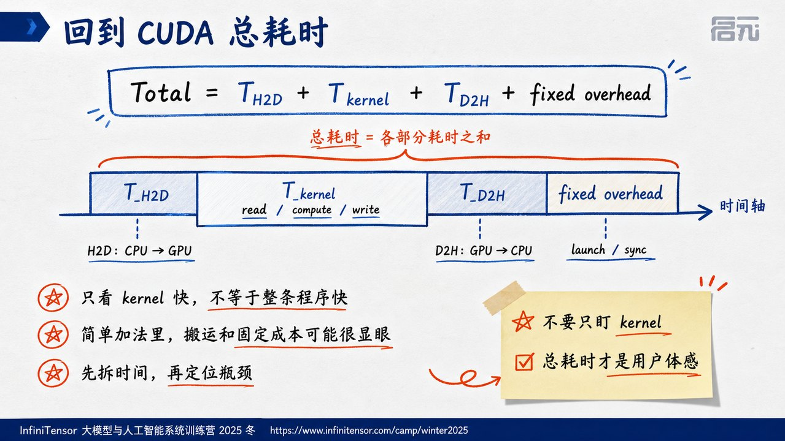
P08 · 回到 CUDA 总耗时
从总时间放大到 kernel 内部
P08 · 回到 CUDA 总耗时
可以先说：“这一页先把‘回到 CUDA 总耗时’讲清楚，后面的内容都从这个判断接出去。” 这一页要讲清楚：Total = T_H2D + T_kernel + T_D2H + fixed overhead。；只看 kernel 快，不等于整条程序快。；简单加法里，搬运和固定成本可能很显眼。。
讲的时候按这条线推进：让学生指出一行 C[i]=A[i]+B[i] 里哪些是读、算、写。 这里会碰到的概念有 CUDA, Host / Device, kernel。
讲画面时，画面承担的作用：时间条拆分。。 不要让学生只看装饰，要指着图、代码或表格说明它在支撑哪一个判断。
这里要收住边界：Nsys 看系统时间线，NCU 才看单个 kernel 内部。 收尾时可以说：“这页先解决到这里，下一页我们把问题接到Nsys 看的是系统时间线。”
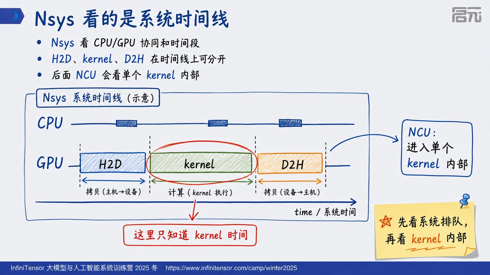
P09 · Nsys 看的是系统时间线
从总时间放大到 kernel 内部
P09 · Nsys 看的是系统时间线
可以先说：“这一页先把‘Nsys 看的是系统时间线’讲清楚，后面的内容都从这个判断接出去。” 这一页要讲清楚：Nsys 看 CPU/GPU 协同和时间段。；H2D、kernel、D2H 在时间线上可分开。；后面 NCU 会看单个 kernel 内部。。
讲的时候按这条线推进：让学生指出一行 C[i]=A[i]+B[i] 里哪些是读、算、写。 先说工具回答什么问题，再说页面上的指标；不要把工具界面讲成按钮教程。 这里会碰到的概念有 CPU / GPU 分工, Host / Device, kernel, Nsys, NCU。
讲画面时，画面承担的作用：简化系统时间线界面。。 不要让学生只看装饰，要指着图、代码或表格说明它在支撑哪一个判断。
这里要收住边界：Nsys 看系统时间线，不负责解释单个 kernel 的全部内部瓶颈。 收尾时可以说：“这页先解决到这里，下一页我们把问题接到从 H2D/D2H 问到 GPU 内部。”
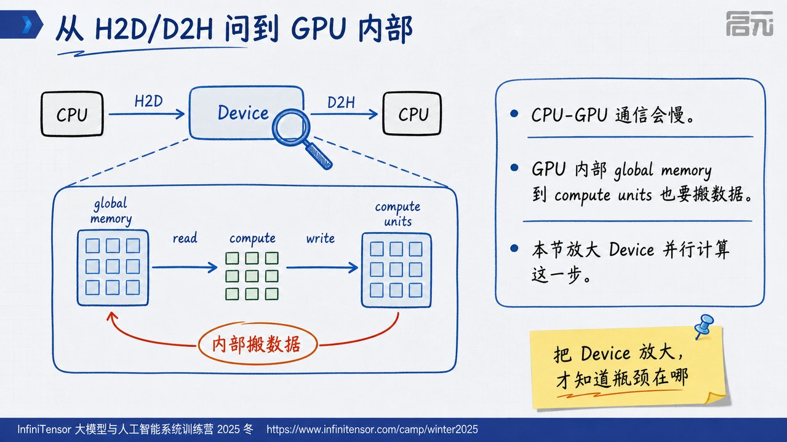
P10 · 从 H2D/D2H 问到 GPU 内部
从总时间放大到 kernel 内部
P10 · 从 H2D/D2H 问到 GPU 内部
可以先说：“这一页先把‘从 H2D/D2H 问到 GPU 内部’讲清楚，后面的内容都从这个判断接出去。” 这一页要讲清楚：CPU-GPU 通信会慢。；GPU 内部 global memory 到 compute units 也要搬数据。；本节放大 Device 并行计算这一步。。
讲的时候按这条线推进：让学生指出一行 C[i]=A[i]+B[i] 里哪些是读、算、写。 这里会碰到的概念有 并行, CPU / GPU 分工, Host / Device。
讲画面时，画面承担的作用：放大镜从 Device 指向内部。。 不要让学生只看装饰，要指着图、代码或表格说明它在支撑哪一个判断。
这里要收住边界：Nsys 看系统时间线，NCU 才看单个 kernel 内部。 收尾时可以说：“这页先解决到这里，下一页我们把问题接到放大 Device：read / compute / write。”
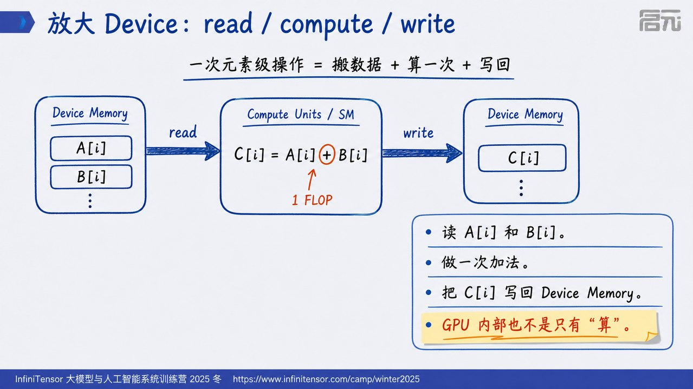
P11 · 放大 Device：read / compute / write
从总时间放大到 kernel 内部
P11 · 放大 Device：read / compute / write
可以先说：“这一页先把‘放大 Device：read / compute / write’讲清楚，后面的内容都从这个判断接出去。” 这一页要讲清楚：读 A[i] 和 B[i]。；做一次加法。；把 C[i] 写回 Device Memory。；GPU 内部也不是只有“算”。。
讲的时候按这条线推进：让学生指出一行 C[i]=A[i]+B[i] 里哪些是读、算、写。 这里会碰到的概念有 CPU / GPU 分工, Host / Device。
讲画面时，画面承担的作用：Device Memory -> Compute Units -> Device Memory。。 不要让学生只看装饰，要指着图、代码或表格说明它在支撑哪一个判断。
这里要收住边界：Nsys 看系统时间线，NCU 才看单个 kernel 内部。 收尾时可以说：“这页先解决到这里，下一页我们把问题接到GPU 内部的高层地图。”
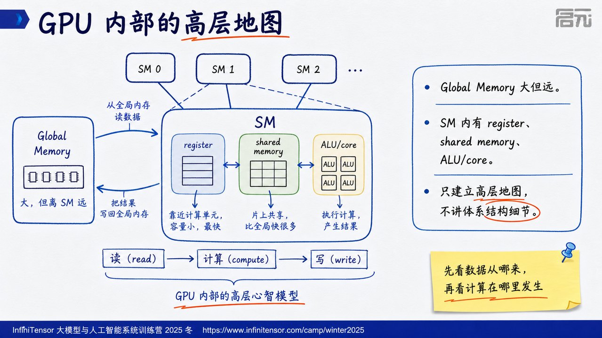
P12 · GPU 内部的高层地图
从总时间放大到 kernel 内部
P12 · GPU 内部的高层地图
可以先说：“这一页先把‘GPU 内部的高层地图’讲清楚，后面的内容都从这个判断接出去。” 这一页要讲清楚：Global Memory 大但远。；SM 内有 register、shared memory、ALU/core。；只建立高层地图，不讲体系结构细节。。
讲的时候按这条线推进：让学生指出一行 C[i]=A[i]+B[i] 里哪些是读、算、写。 这里会碰到的概念有 CPU / GPU 分工, SM。
讲画面时，画面承担的作用：简化层级图。。 不要让学生只看装饰，要指着图、代码或表格说明它在支撑哪一个判断。
这里要收住边界：Nsys 看系统时间线，NCU 才看单个 kernel 内部。 收尾时可以说：“这页先解决到这里，下一页我们把问题接到IPO 模型。”
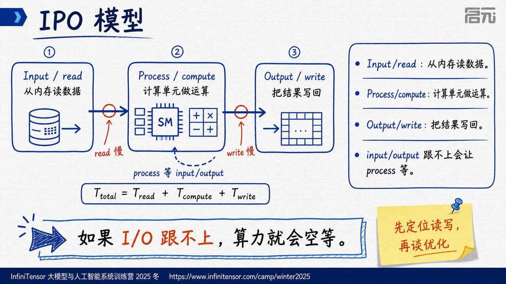
P13 · IPO 模型
从总时间放大到 kernel 内部
P13 · IPO 模型
可以先说：“这一页先把‘IPO 模型’讲清楚，后面的内容都从这个判断接出去。” 这一页要讲清楚：Input/read：从内存读数据。；Process/compute：计算单元做运算。；Output/write：把结果写回。；input/output 跟不上会让 process 等。。
讲的时候按这条线推进：让学生指出一行 C[i]=A[i]+B[i] 里哪些是读、算、写。 这里不需要额外展开新术语，重点是把页面角色讲清楚。
讲画面时，画面承担的作用：三段 pipeline。。 不要让学生只看装饰，要指着图、代码或表格说明它在支撑哪一个判断。
这里要收住边界：Nsys 看系统时间线，NCU 才看单个 kernel 内部。 收尾时可以说：“这页先解决到这里，下一页我们把问题接到bit、byte、B 和 b。”
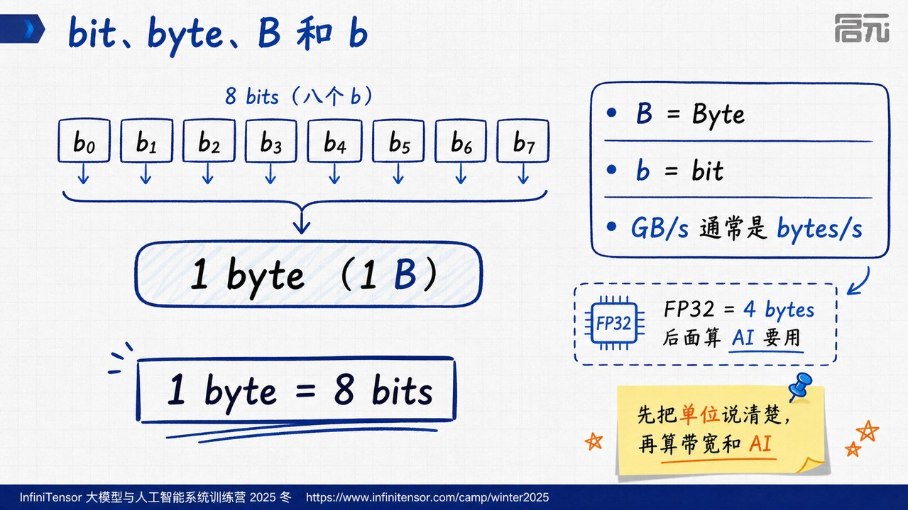
P14 · bit、byte、B 和 b
性能单位和内存墙
P14 · bit、byte、B 和 b
可以先说：“这一页先把‘bit、byte、B 和 b’讲清楚，后面的内容都从这个判断接出去。” 这一页要讲清楚：1 byte = 8 bits。；B 是 Byte，b 是 bit。；GB/s 通常是 bytes/s。；FP32 的 4 bytes 后面要用。。
讲的时候按这条线推进：每个单位都要落到 vector add 后面会怎么算，不要孤立讲定义。 这里会碰到的概念有 byte / FLOP。
讲画面时，画面承担的作用：8 bits 合成 1 byte。。 不要让学生只看装饰，要指着图、代码或表格说明它在支撑哪一个判断。
这里要收住边界：读写内存不计入 FLOP；理论峰值不等于真实程序性能。 收尾时可以说：“这页先解决到这里，下一页我们把问题接到类型大小决定数据量。”
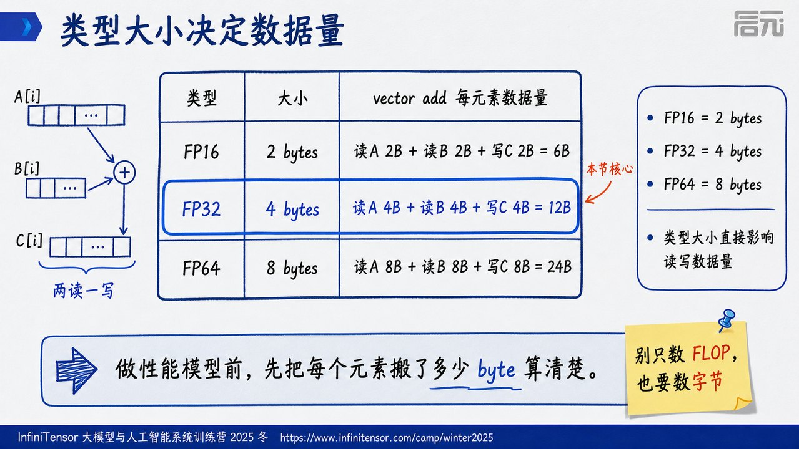
P15 · 类型大小决定数据量
性能单位和内存墙
P15 · 类型大小决定数据量
可以先说：“这一页先把‘类型大小决定数据量’讲清楚，后面的内容都从这个判断接出去。” 这一页要讲清楚：FP16 = 2 bytes。；FP32 = 4 bytes，本节核心。；FP64 = 8 bytes。；类型大小直接影响读写数据量。。
讲的时候按这条线推进：每个单位都要落到 vector add 后面会怎么算，不要孤立讲定义。 这里会碰到的概念有 核心, byte / FLOP, half / FP16。
讲画面时，画面承担的作用：类型大小表。。 不要让学生只看装饰，要指着图、代码或表格说明它在支撑哪一个判断。
这里要收住边界：这里的 FP16/FP32/FP64 只用于说明类型大小和数据量；half API、舍入和数值误差留到 Lesson 04。 收尾时可以说：“这页先解决到这里，下一页我们把问题接到FLOP：怎么数一次计算。”
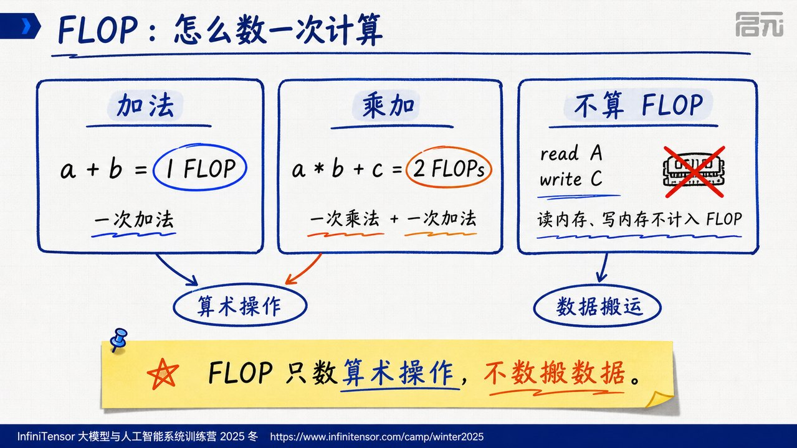
P16 · FLOP：怎么数一次计算
性能单位和内存墙
P16 · FLOP：怎么数一次计算
可以先说：“这一页先把‘FLOP：怎么数一次计算’讲清楚，后面的内容都从这个判断接出去。” 这一页要讲清楚：a + b 是 1 FLOP。；a * b + c 通常按 2 FLOPs 讲。；读内存、写内存不计入 FLOP。。
讲的时候按这条线推进：每个单位都要落到 vector add 后面会怎么算，不要孤立讲定义。 先说单位和物理含义，再写公式；公式必须回到 vector add 的读、算、写账本。 这里会碰到的概念有 byte / FLOP。
讲画面时，画面承担的作用：算式卡片。。 不要让学生只看装饰，要指着图、代码或表格说明它在支撑哪一个判断。
这里要收住边界：读写内存不计入 FLOP；理论峰值不等于真实程序性能。 收尾时可以说：“这页先解决到这里，下一页我们把问题接到FLOPS / TFLOPS。”
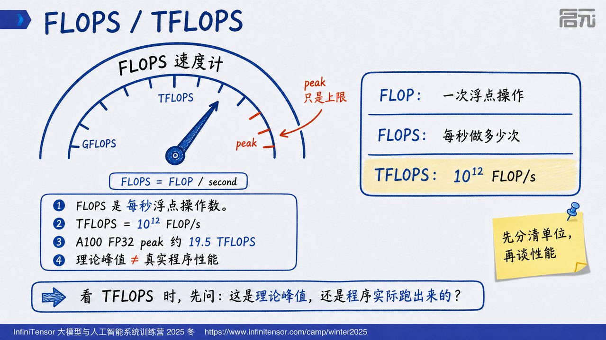
P17 · FLOPS / TFLOPS
性能单位和内存墙
P17 · FLOPS / TFLOPS
可以先说：“这一页先把‘FLOPS / TFLOPS’讲清楚，后面的内容都从这个判断接出去。” 这一页要讲清楚：FLOPS 是每秒浮点操作数。；TFLOPS 是 10^12 FLOP/s。；A100 FP32 peak 约 19.5 TFLOPS。；理论峰值不等于真实程序性能。。
讲的时候按这条线推进：每个单位都要落到 vector add 后面会怎么算，不要孤立讲定义。 先说单位和物理含义，再写公式；公式必须回到 vector add 的读、算、写账本。 这里会碰到的概念有 byte / FLOP。
讲画面时，画面承担的作用：速度计/计数器。。 不要让学生只看装饰，要指着图、代码或表格说明它在支撑哪一个判断。
这里要收住边界：读写内存不计入 FLOP；理论峰值不等于真实程序性能。 收尾时可以说：“这页先解决到这里，下一页我们把问题接到Memory Bandwidth。”
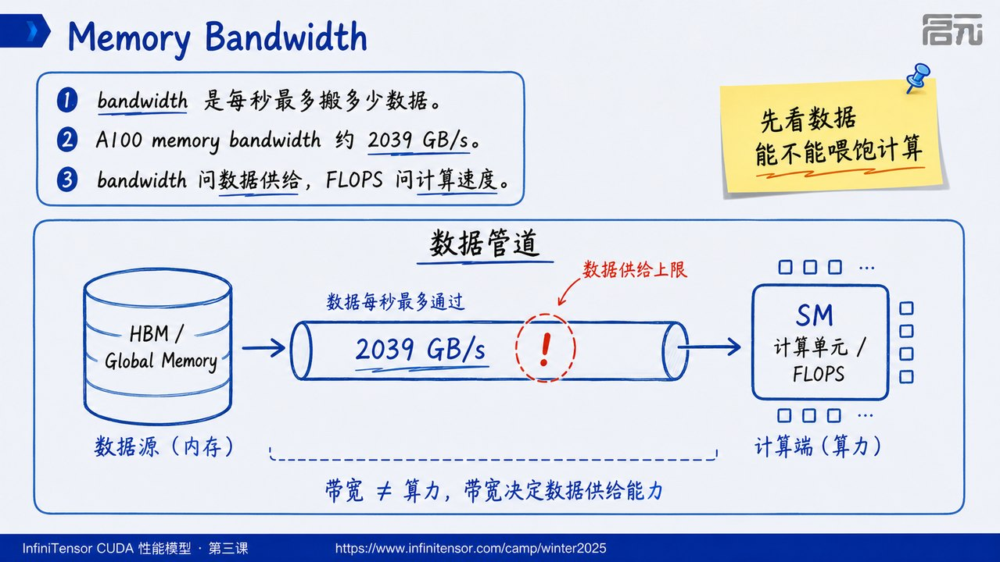
P18 · Memory Bandwidth
性能单位和内存墙
P18 · Memory Bandwidth
可以先说：“这一页先把‘Memory Bandwidth’讲清楚，后面的内容都从这个判断接出去。” 这一页要讲清楚：bandwidth 是每秒最多搬多少数据。；A100 memory bandwidth 约 2039 GB/s。；bandwidth 问数据供给，FLOPS 问计算速度。。
讲的时候按这条线推进：每个单位都要落到 vector add 后面会怎么算，不要孤立讲定义。 先说单位和物理含义，再写公式；公式必须回到 vector add 的读、算、写账本。 这里会碰到的概念有 byte / FLOP, bandwidth。
讲画面时，画面承担的作用：数据管道。。 不要让学生只看装饰，要指着图、代码或表格说明它在支撑哪一个判断。
这里要收住边界：读写内存不计入 FLOP；理论峰值不等于真实程序性能。 收尾时可以说：“这页先解决到这里，下一页我们把问题接到为什么不能直接比。”
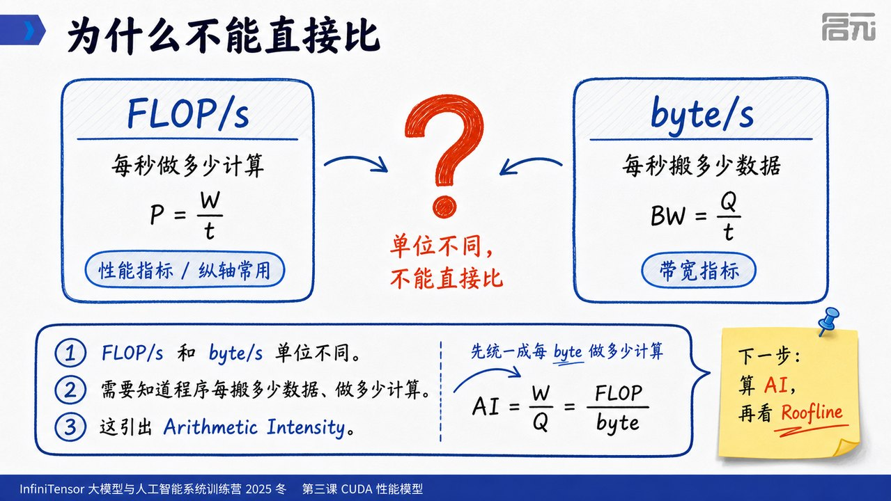
P19 · 为什么不能直接比
性能单位和内存墙
P19 · 为什么不能直接比
可以先问学生：“看到‘为什么不能直接比’，你们觉得真正卡住我们的是什么？” 这一页要讲清楚：FLOP/s 和 byte/s 单位不同。；需要知道程序每搬多少数据、做多少计算。；这引出 Arithmetic Intensity。。
讲的时候按这条线推进：每个单位都要落到 vector add 后面会怎么算，不要孤立讲定义。 先说单位和物理含义，再写公式；公式必须回到 vector add 的读、算、写账本。 这里会碰到的概念有 byte / FLOP, Arithmetic Intensity。
讲画面时，画面承担的作用：两个指标卡中间问号。。 不要让学生只看装饰，要指着图、代码或表格说明它在支撑哪一个判断。
这里要收住边界：读写内存不计入 FLOP；理论峰值不等于真实程序性能。 收尾时可以说：“这页先解决到这里，下一页我们把问题接到内存墙。”
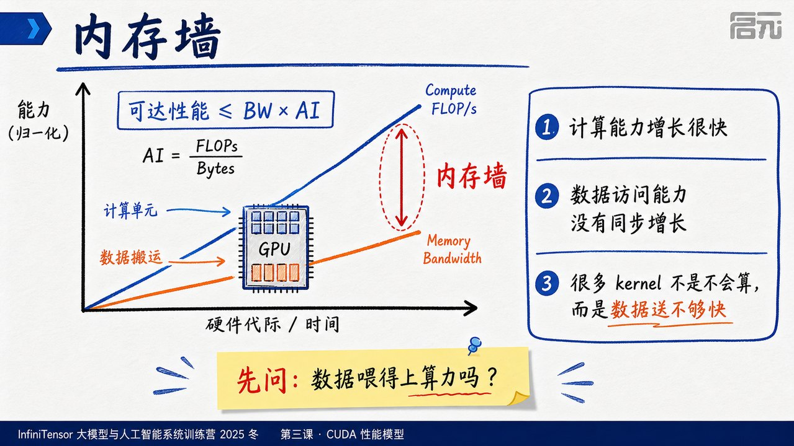
P20 · 内存墙
性能单位和内存墙
P20 · 内存墙
可以先说：“这一页先把‘内存墙’讲清楚，后面的内容都从这个判断接出去。” 这一页要讲清楚：计算能力增长很快。；数据访问能力没有同步增长。；很多 kernel 不是不会算，而是数据送不够快。。
讲的时候按这条线推进：每个单位都要落到 vector add 后面会怎么算，不要孤立讲定义。 这里会碰到的概念有 kernel, Compute Capability。
讲画面时，画面承担的作用：compute vs memory 趋势差距图。。 不要让学生只看装饰，要指着图、代码或表格说明它在支撑哪一个判断。
这里要收住边界：读写内存不计入 FLOP；理论峰值不等于真实程序性能。 收尾时可以说：“这页先解决到这里，下一页我们把问题接到冯诺依曼结构带来的事实。”
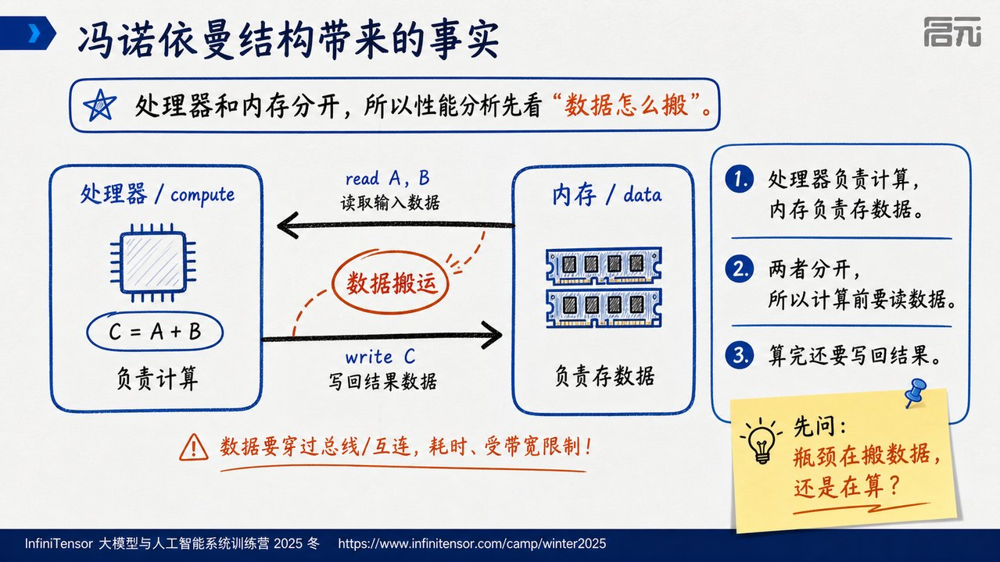
P21 · 冯诺依曼结构带来的事实
性能单位和内存墙
P21 · 冯诺依曼结构带来的事实
可以先说：“这一页先把‘冯诺依曼结构带来的事实’讲清楚，后面的内容都从这个判断接出去。” 这一页要讲清楚：处理器负责计算，内存负责存数据。；两者分开，所以计算前要读数据。；算完还要写回结果。。
讲的时候按这条线推进：每个单位都要落到 vector add 后面会怎么算，不要孤立讲定义。 这里不需要额外展开新术语，重点是把页面角色讲清楚。
讲画面时，画面承担的作用：processor-memory 分离图。。 不要让学生只看装饰，要指着图、代码或表格说明它在支撑哪一个判断。
这里要收住边界：读写内存不计入 FLOP；理论峰值不等于真实程序性能。 收尾时可以说：“这页先解决到这里，下一页我们把问题接到回到 C[i] = A[i] + B[i]。”
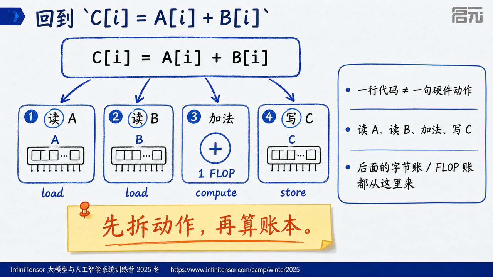
P22 · 回到 `C[i] = A[i] + B[i]`
vector add 账本和 AI
P22 · 回到 C[i] = A[i] + B[i]
可以先说：“这一页先把‘回到 C[i] = A[i] + B[i]’讲清楚，后面的内容都从这个判断接出去。” 这一页要讲清楚：一行代码在硬件视角不是一句话。；它包含读 A、读 B、加法、写 C。；后面所有账本都从这里来。。
讲的时候按这条线推进：逐项数：读 A、读 B、写 C、一次加法，然后得到 1/12。 这里不需要额外展开新术语，重点是把页面角色讲清楚。
讲画面时，画面承担的作用：代码行拆成四个动作。。 不要让学生只看装饰，要指着图、代码或表格说明它在支撑哪一个判断。
这里要收住边界：AI 是程序特征，不是硬件参数；不要把它说成 GPU 的属性。 收尾时可以说：“这页先解决到这里，下一页我们把问题接到数据量账本。”
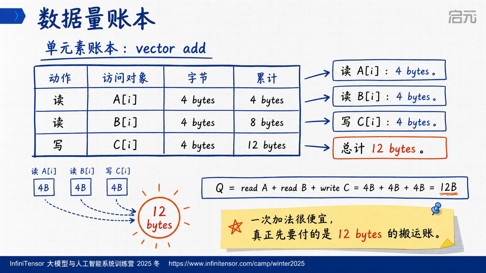
P23 · 数据量账本
vector add 账本和 AI
P23 · 数据量账本
可以先说：“这一页先把‘数据量账本’讲清楚，后面的内容都从这个判断接出去。” 这一页要讲清楚：读 A[i]：4 bytes。；读 B[i]：4 bytes。；写 C[i]：4 bytes。；总计 12 bytes。。
讲的时候按这条线推进：逐项数：读 A、读 B、写 C、一次加法，然后得到 1/12。 先说单位和物理含义，再写公式；公式必须回到 vector add 的读、算、写账本。 这里会碰到的概念有 byte / FLOP。
讲画面时，画面承担的作用：ledger table.。 不要让学生只看装饰，要指着图、代码或表格说明它在支撑哪一个判断。
这里要收住边界：AI 是程序特征，不是硬件参数；不要把它说成 GPU 的属性。 收尾时可以说：“这页先解决到这里，下一页我们把问题接到计算量账本。”
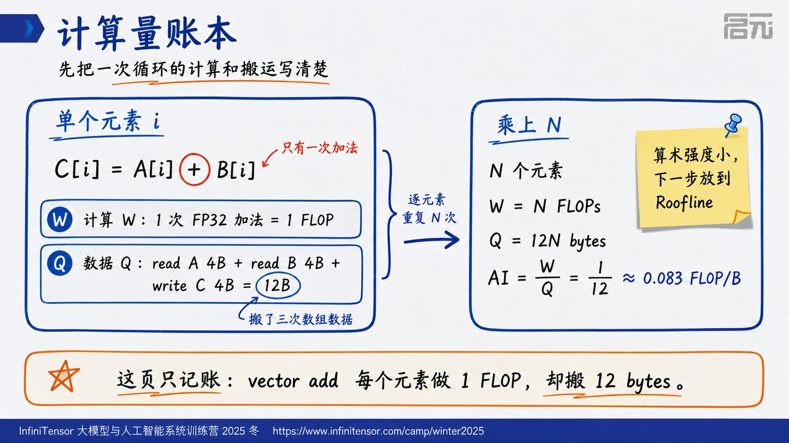
P24 · 计算量账本
vector add 账本和 AI
P24 · 计算量账本
可以先说：“这一页先把‘计算量账本’讲清楚，后面的内容都从这个判断接出去。” 这一页要讲清楚：FP32 加法是 1 FLOP。；N 个元素就是 N FLOPs。；数据量是 12N bytes。。
讲的时候按这条线推进：逐项数：读 A、读 B、写 C、一次加法，然后得到 1/12。 先说单位和物理含义，再写公式；公式必须回到 vector add 的读、算、写账本。 这里会碰到的概念有 byte / FLOP。
讲画面时，画面承担的作用：add operator + N scaling.。 不要让学生只看装饰，要指着图、代码或表格说明它在支撑哪一个判断。
这里要收住边界：AI 是程序特征，不是硬件参数；不要把它说成 GPU 的属性。 收尾时可以说：“这页先解决到这里，下一页我们把问题接到计算强度 AI。”
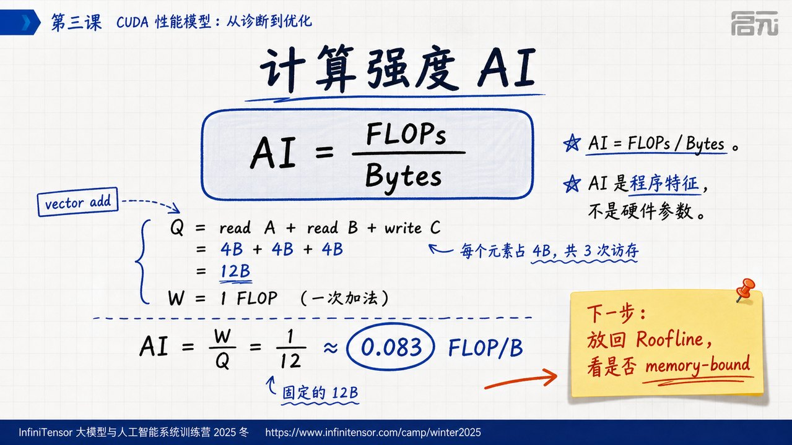
P25 · 计算强度 AI
vector add 账本和 AI
P25 · 计算强度 AI
可以先说：“这一页先把‘计算强度 AI’讲清楚，后面的内容都从这个判断接出去。” 这一页要讲清楚：AI = FLOPs / Bytes。；AI 是程序特征，不是硬件参数。；vector add：1 / 12 ≈ 0.083 FLOP/byte。。
讲的时候按这条线推进：逐项数：读 A、读 B、写 C、一次加法，然后得到 1/12。 先说单位和物理含义，再写公式；公式必须回到 vector add 的读、算、写账本。 这里会碰到的概念有 byte / FLOP, Arithmetic Intensity。
讲画面时，画面承担的作用：large formula card.。 不要让学生只看装饰，要指着图、代码或表格说明它在支撑哪一个判断。
这里要收住边界：AI 是程序特征，不是硬件参数；不要把它说成 GPU 的属性。 收尾时可以说：“这页先解决到这里，下一页我们把问题接到0.083 为什么低。”
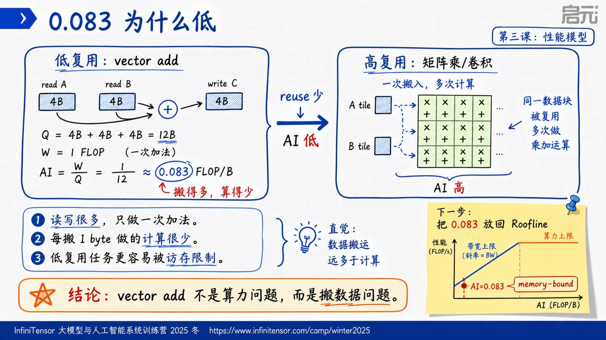
P26 · 0.083 为什么低
vector add 账本和 AI
P26 · 0.083 为什么低
可以先问学生：“看到‘0.083 为什么低’，你们觉得真正卡住我们的是什么？” 这一页要讲清楚：读写很多，只做一次加法。；每搬 1 byte 做的计算很少。；低复用任务更容易被访存限制。。
讲的时候按这条线推进：逐项数：读 A、读 B、写 C、一次加法，然后得到 1/12。 先说单位和物理含义，再写公式；公式必须回到 vector add 的读、算、写账本。 这里会碰到的概念有 byte / FLOP。
讲画面时，画面承担的作用：low reuse vs high reuse comparison.。 不要让学生只看装饰，要指着图、代码或表格说明它在支撑哪一个判断。
这里要收住边界：AI 是程序特征，不是硬件参数；不要把它说成 GPU 的属性。 收尾时可以说：“这页先解决到这里，下一页我们把问题接到Roofline 要解决什么。”
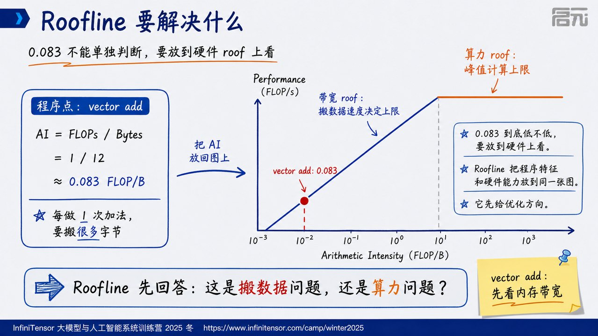
P27 · Roofline 要解决什么
Roofline 判断方向
P27 · Roofline 要解决什么
可以先说：“这一页先把‘Roofline 要解决什么’讲清楚，后面的内容都从这个判断接出去。” 这一页要讲清楚：0.083 到底低不低，要放到硬件上看。；Roofline 把程序特征和硬件能力放到同一张图。；它先给优化方向。。
讲的时候按这条线推进：先讲坐标轴，再讲两条上限，最后把 vector add 点放到 A100。 先说单位和物理含义，再写公式；公式必须回到 vector add 的读、算、写账本。 这里会碰到的概念有 Roofline。
讲画面时，画面承担的作用：程序点和硬件 roof 合流。。 不要让学生只看装饰，要指着图、代码或表格说明它在支撑哪一个判断。
这里要收住边界：Roofline 给方向，不解释所有缓存、访问模式和 occupancy 细节。 收尾时可以说：“这页先解决到这里，下一页我们把问题接到Roofline 坐标轴。”
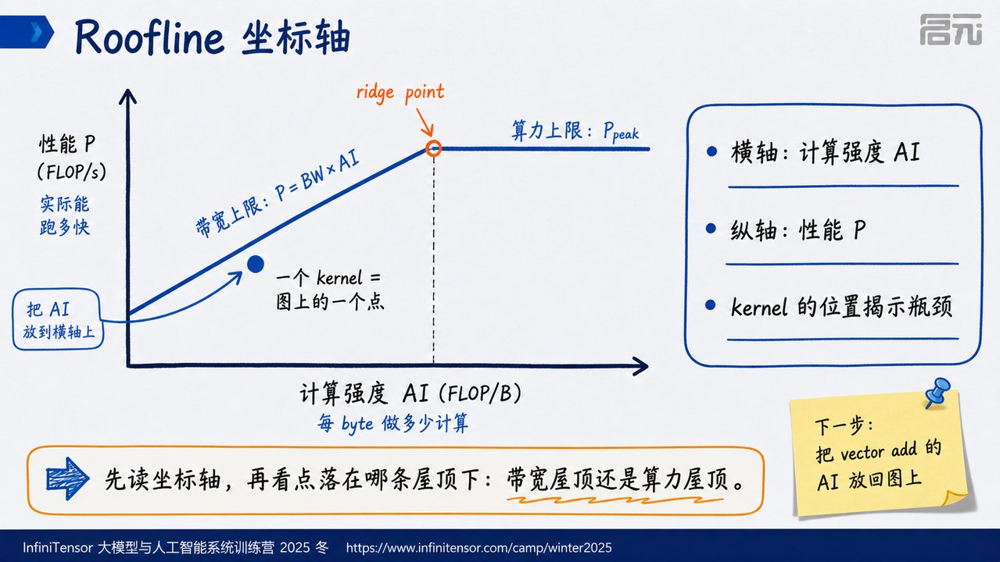
P28 · Roofline 坐标轴
Roofline 判断方向
P28 · Roofline 坐标轴
可以先说：“这一页先把‘Roofline 坐标轴’讲清楚，后面的内容都从这个判断接出去。” 这一页要讲清楚：横轴：计算强度 AI。；纵轴：性能 P。；一个 kernel 可以落成图上的一个点。。
讲的时候按这条线推进：先讲坐标轴，再讲两条上限，最后把 vector add 点放到 A100。 先说单位和物理含义，再写公式；公式必须回到 vector add 的读、算、写账本。 这里会碰到的概念有 kernel, Arithmetic Intensity, Roofline。
讲画面时，画面承担的作用：clean Roofline axes.。 不要让学生只看装饰，要指着图、代码或表格说明它在支撑哪一个判断。
这里要收住边界：Roofline 给方向，不解释所有缓存、访问模式和 occupancy 细节。 收尾时可以说：“这页先解决到这里，下一页我们把问题接到从 vector add 的 AI 回到 Roofline 图。”
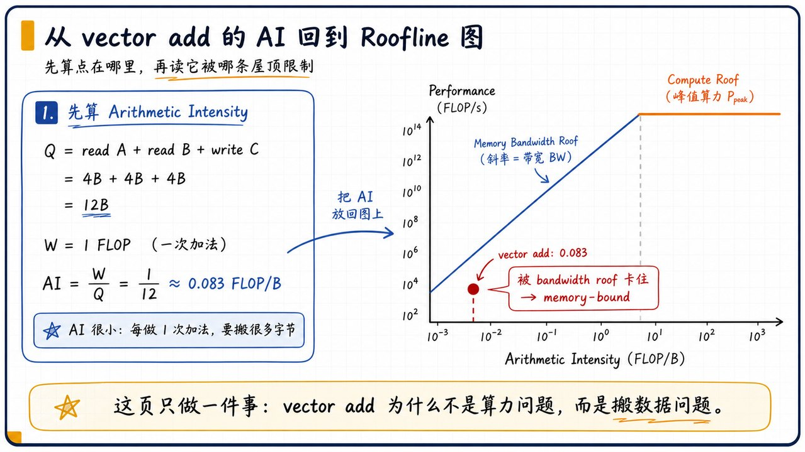
P29 · 从 vector add 的 AI 回到 Roofline 图
Roofline 判断方向
P29 · 从 vector add 的 AI 回到 Roofline 图
可以先说：“这一页先把‘从 vector add 的 AI 回到 Roofline 图’讲清楚，后面的内容都从这个判断接出去。” 这一页要讲清楚：斜线：P = beta * I。；横线：P = P_peak。；左边带宽限制，右边算力限制。。
讲的时候按这条线推进：先讲坐标轴，再讲两条上限，最后把 vector add 点放到 A100。 先说单位和物理含义，再写公式；公式必须回到 vector add 的读、算、写账本。 这里会碰到的概念有 Arithmetic Intensity, Roofline。
讲画面时，画面承担的作用：annotated roofline.。 不要让学生只看装饰，要指着图、代码或表格说明它在支撑哪一个判断。
这里要收住边界：Roofline 给方向，不解释所有缓存、访问模式和 occupancy 细节。 收尾时可以说：“这页先解决到这里，下一页我们把问题接到ridge point。”
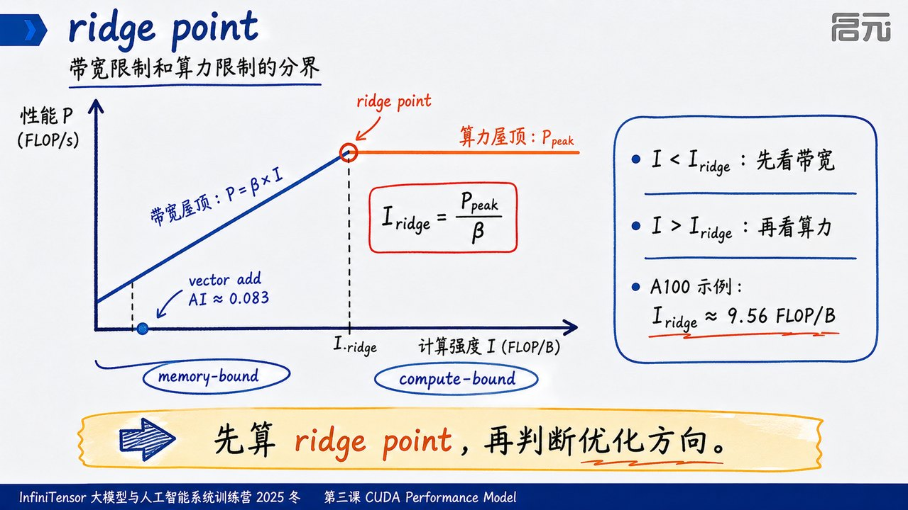
P30 · ridge point
Roofline 判断方向
P30 · ridge point
可以先说：“这一页先把‘ridge point’讲清楚，后面的内容都从这个判断接出去。” 这一页要讲清楚：I_ridge = P_peak / beta。；它是带宽限制和算力限制的分界。；它告诉我们吃满峰值算力需要的最低 AI。。
讲的时候按这条线推进：先讲坐标轴，再讲两条上限，最后把 vector add 点放到 A100。 先说单位和物理含义，再写公式；公式必须回到 vector add 的读、算、写账本。 这里会碰到的概念有 Arithmetic Intensity, Roofline。
讲画面时，画面承担的作用：highlighted intersection.。 不要让学生只看装饰，要指着图、代码或表格说明它在支撑哪一个判断。
这里要收住边界：Roofline 给方向，不解释所有缓存、访问模式和 occupancy 细节。 收尾时可以说：“这页先解决到这里，下一页我们把问题接到A100 ridge point。”
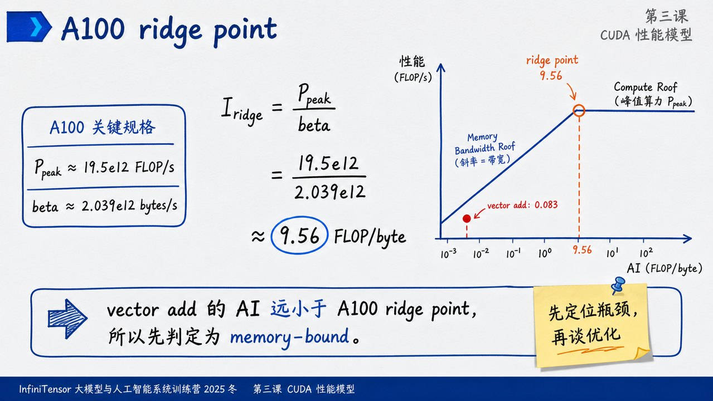
P31 · A100 ridge point
Roofline 判断方向
P31 · A100 ridge point
可以先说：“这一页先把‘A100 ridge point’讲清楚，后面的内容都从这个判断接出去。” 这一页要讲清楚：P_peak ≈ 19.5e12 FLOP/s。；beta ≈ 2.039e12 bytes/s。；I_ridge ≈ 9.56 FLOP/byte。；这是教学估算，口径来自原课程材料。。
讲的时候按这条线推进：先讲坐标轴，再讲两条上限，最后把 vector add 点放到 A100。 先说单位和物理含义，再写公式；公式必须回到 vector add 的读、算、写账本。 这里会碰到的概念有 byte / FLOP, Roofline。
讲画面时，画面承担的作用：formula + A100 spec cards.。 不要让学生只看装饰，要指着图、代码或表格说明它在支撑哪一个判断。
这里要收住边界：Roofline 给方向，不解释所有缓存、访问模式和 occupancy 细节。 收尾时可以说：“这页先解决到这里，下一页我们把问题接到vector add 放到 A100。”
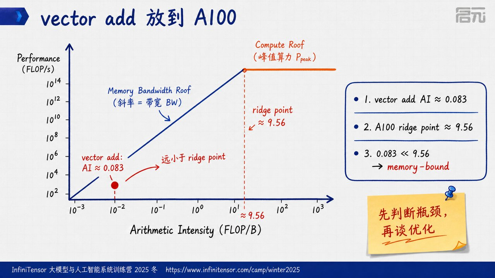
P32 · vector add 放到 A100
Roofline 判断方向
P32 · vector add 放到 A100
可以先说：“这一页先把‘vector add 放到 A100’讲清楚，后面的内容都从这个判断接出去。” 这一页要讲清楚：vector add AI 约 0.083。；A100 ridge point 约 9.56。；0.083 << 9.56，更像 memory-bound。。
讲的时候按这条线推进：先讲坐标轴，再讲两条上限，最后把 vector add 点放到 A100。 先说单位和物理含义，再写公式；公式必须回到 vector add 的读、算、写账本。 这里会碰到的概念有 Arithmetic Intensity, Roofline, memory-bound / compute-bound。
讲画面时，画面承担的作用：point far left of ridge.。 不要让学生只看装饰，要指着图、代码或表格说明它在支撑哪一个判断。
这里要收住边界：Roofline 给方向，不解释所有缓存、访问模式和 occupancy 细节。 收尾时可以说：“这页先解决到这里，下一页我们把问题接到memory-bound / compute-bound。”
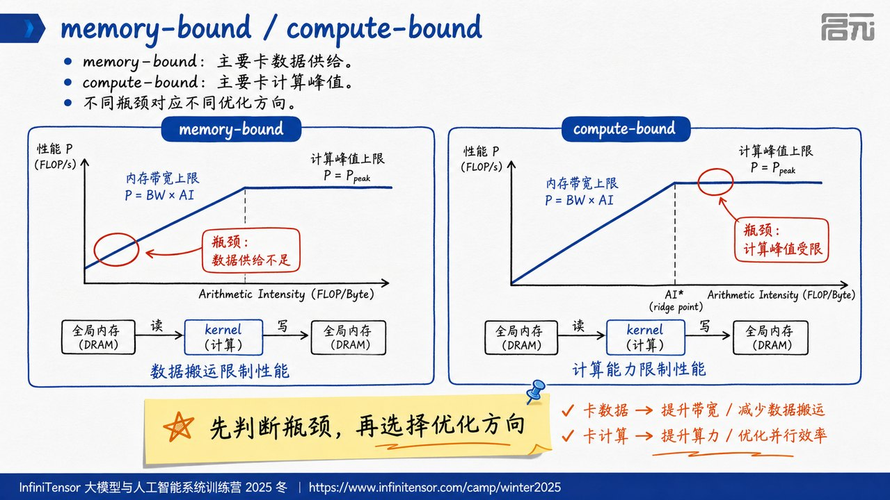
P33 · memory-bound / compute-bound
Roofline 判断方向
P33 · memory-bound / compute-bound
可以先说：“这一页先把‘memory-bound / compute-bound’讲清楚，后面的内容都从这个判断接出去。” 这一页要讲清楚：memory-bound：主要卡数据供给。；compute-bound：主要卡计算峰值。；不同瓶颈对应不同优化方向。。
讲的时候按这条线推进：先讲坐标轴，再讲两条上限，最后把 vector add 点放到 A100。 这里会碰到的概念有 memory-bound / compute-bound。
讲画面时，画面承担的作用：two-zone comparison.。 不要让学生只看装饰，要指着图、代码或表格说明它在支撑哪一个判断。
这里要收住边界：Roofline 给方向，不解释所有缓存、访问模式和 occupancy 细节。 收尾时可以说：“这页先解决到这里，下一页我们把问题接到Roofline 不是全部。”
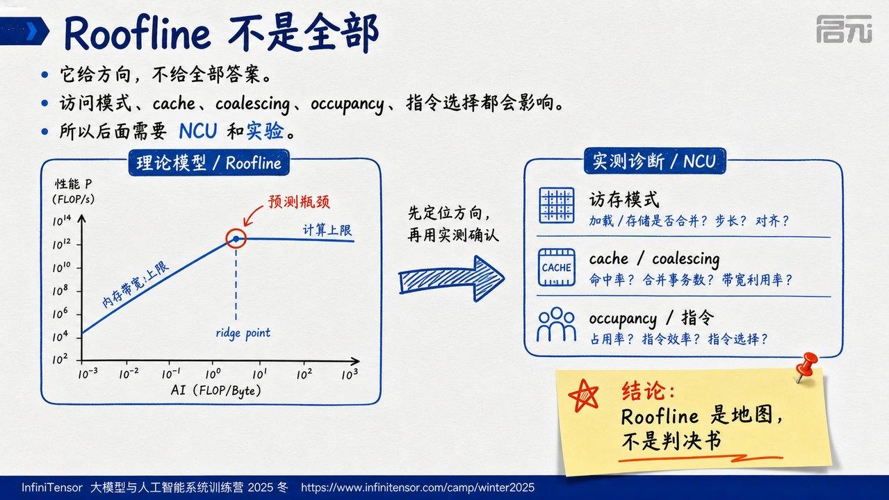
P34 · Roofline 不是全部
Roofline 判断方向
P34 · Roofline 不是全部
可以先说：“这一页先把‘Roofline 不是全部’讲清楚，后面的内容都从这个判断接出去。” 这一页要讲清楚：它给方向，不给全部答案。；访问模式、cache、coalescing、occupancy、指令选择都会影响。；所以后面需要 NCU 和实验。。
讲的时候按这条线推进：先讲坐标轴，再讲两条上限，最后把 vector add 点放到 A100。 先说单位和物理含义，再写公式；公式必须回到 vector add 的读、算、写账本。 这里会碰到的概念有 NCU, Roofline, coalescing。
讲画面时，画面承担的作用：theory vs measurement.。 不要让学生只看装饰，要指着图、代码或表格说明它在支撑哪一个判断。
这里要收住边界：NCU 在这里是验证入口，不展开成完整工具课。 收尾时可以说：“这页先解决到这里，下一页我们把问题接到为什么需要 NCU。”
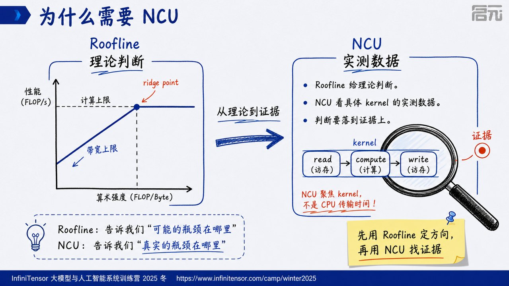
P35 · 为什么需要 NCU
NCU 验证入口
P35 · 为什么需要 NCU
可以先问学生：“看到‘为什么需要 NCU’，你们觉得真正卡住我们的是什么？” 这一页要讲清楚：Roofline 给理论判断。；NCU 看具体 kernel 的实测数据。；判断要落到证据上。。
讲的时候按这条线推进：只讲 NCU 回答什么问题：单 kernel 的 compute/memory throughput、Roofline 点、Speed of Light。 这里会碰到的概念有 kernel, NCU, Roofline。
讲画面时，画面承担的作用：magnifying glass on kernel.。 不要让学生只看装饰，要指着图、代码或表格说明它在支撑哪一个判断。
这里要收住边界：NCU 在这里是验证入口，不展开成完整工具课。 收尾时可以说：“这页先解决到这里，下一页我们把问题接到Nsys vs NCU。”
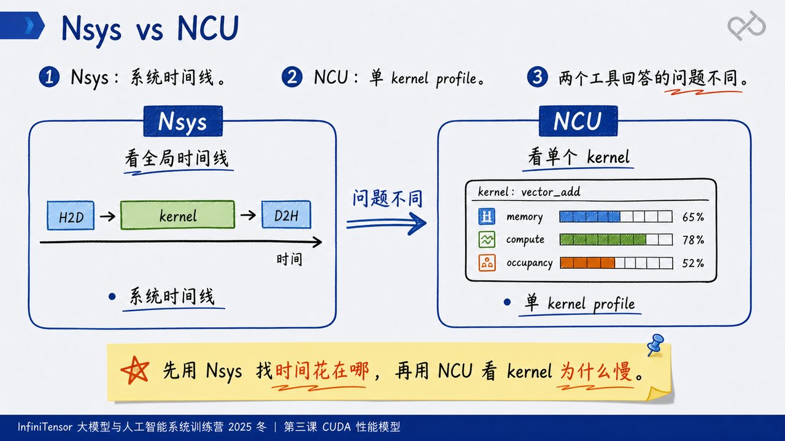
P36 · Nsys vs NCU
NCU 验证入口
P36 · Nsys vs NCU
可以先说：“这一页先把‘Nsys vs NCU’讲清楚，后面的内容都从这个判断接出去。” 这一页要讲清楚：Nsys：系统时间线。；NCU：单 kernel profile。；两个工具回答的问题不同。。
讲的时候按这条线推进：只讲 NCU 回答什么问题：单 kernel 的 compute/memory throughput、Roofline 点、Speed of Light。 先说工具回答什么问题，再说页面上的指标；不要把工具界面讲成按钮教程。 这里会碰到的概念有 kernel, Nsys, NCU。
讲画面时，画面承担的作用：two tool cards.。 不要让学生只看装饰，要指着图、代码或表格说明它在支撑哪一个判断。
这里要收住边界：Nsys 看系统时间线，不负责解释单个 kernel 的全部内部瓶颈。 收尾时可以说：“这页先解决到这里，下一页我们把问题接到NCU Summary 看什么。”
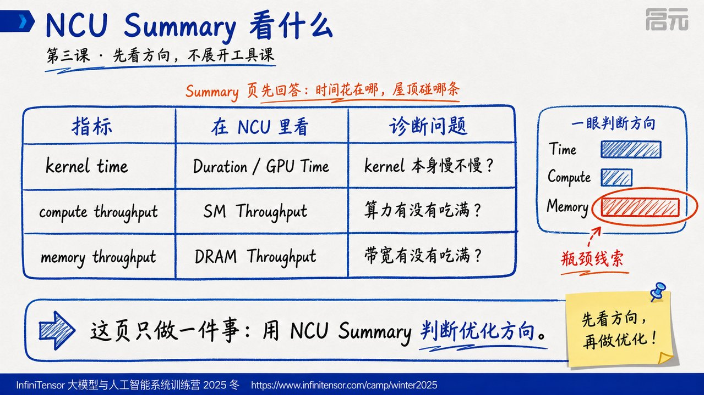
P37 · NCU Summary 看什么
NCU 验证入口
P37 · NCU Summary 看什么
可以先说：“这一页先把‘NCU Summary 看什么’讲清楚，后面的内容都从这个判断接出去。” 这一页要讲清楚：kernel time。；compute throughput。；memory throughput。；先看方向，不展开工具课。。
讲的时候按这条线推进：只讲 NCU 回答什么问题：单 kernel 的 compute/memory throughput、Roofline 点、Speed of Light。 先说工具回答什么问题，再说页面上的指标；不要把工具界面讲成按钮教程。 这里会碰到的概念有 kernel, NCU。
讲画面时，画面承担的作用：simplified NCU summary table.。 不要让学生只看装饰，要指着图、代码或表格说明它在支撑哪一个判断。
这里要收住边界：NCU 在这里是验证入口，不展开成完整工具课。 收尾时可以说：“这页先解决到这里，下一页我们把问题接到NCU Roofline / Details。”
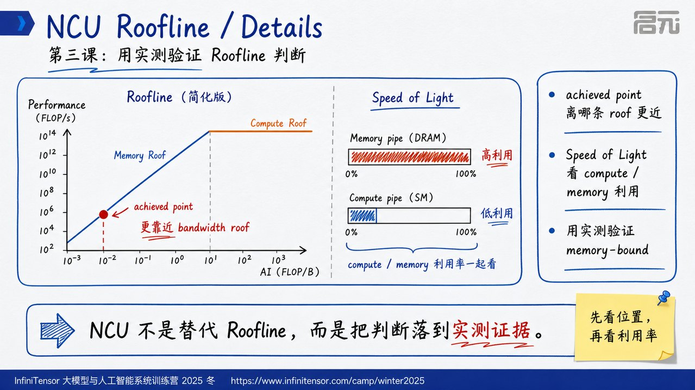
P38 · NCU Roofline / Details
NCU 验证入口
P38 · NCU Roofline / Details
可以先说：“这一页先把‘NCU Roofline / Details’讲清楚，后面的内容都从这个判断接出去。” 这一页要讲清楚：achieved point 离哪条 roof 更近。；Speed of Light 看 compute/memory 利用。；用实测验证 memory-bound。。
讲的时候按这条线推进：只讲 NCU 回答什么问题：单 kernel 的 compute/memory throughput、Roofline 点、Speed of Light。 这里会碰到的概念有 NCU, Roofline, memory-bound / compute-bound。
讲画面时，画面承担的作用：NCU roofline/detail card.。 不要让学生只看装饰，要指着图、代码或表格说明它在支撑哪一个判断。
这里要收住边界：NCU 在这里是验证入口，不展开成完整工具课。 收尾时可以说：“这页先解决到这里，下一页我们把问题接到诊断之后怎么办。”
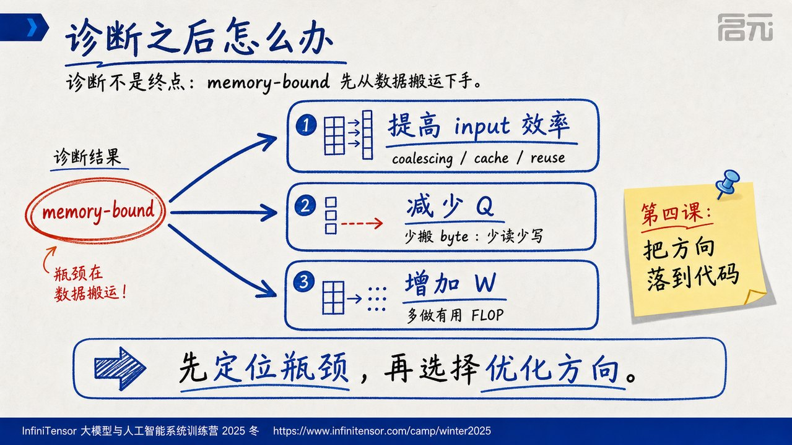
P39 · 诊断之后怎么办
交给第四节
P39 · 诊断之后怎么办
可以先说：“这一页先把‘诊断之后怎么办’讲清楚，后面的内容都从这个判断接出去。” 这一页要讲清楚：如果 bottleneck 在 memory，要先想 read/write。；三条方向：提高 input 效率、减少 Q、增加 W。；第四课 从这些方向进入代码。。
讲的时候按这条线推进：收尾时让学生把 float4、half、fusion 分别挂到 A/B/C。 这里不需要额外展开新术语，重点是把页面角色讲清楚。
讲画面时，画面承担的作用：three optimization paths.。 不要让学生只看装饰，要指着图、代码或表格说明它在支撑哪一个判断。
这里要收住边界：第三节到此为止，不讲第四节代码。 收尾时可以说：“这页先解决到这里，下一页我们把问题接到第三课 总结。”
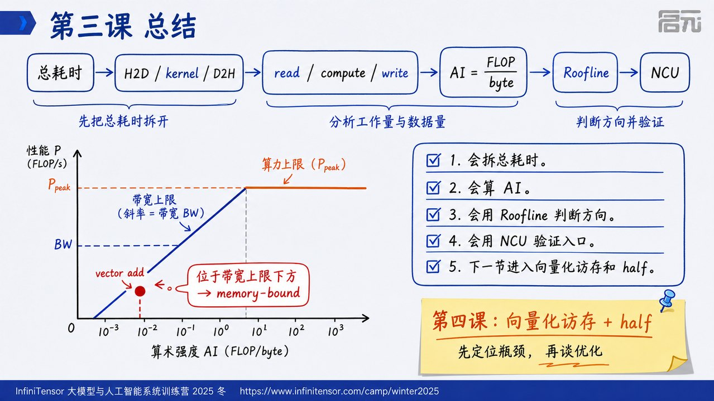
P40 · 第三课 总结
交给第四节
P40 · 第三课 总结
可以先说：“我们把今天真正要带走的话压成几句，后面的课就接在这些判断上。” 这一页要讲清楚：会拆总耗时。；会算 AI。；会用 Roofline 判断方向。；会用 NCU 验证入口。；下一节进入向量化访存和 half。。
讲的时候按这条线推进：收尾时让学生把 float4、half、fusion 分别挂到 A/B/C。 这里会碰到的概念有 NCU, Arithmetic Intensity, Roofline, half / FP16。
讲画面时，画面承担的作用：compact checklist / closing.。 不要让学生只看装饰，要指着图、代码或表格说明它在支撑哪一个判断。
这里要收住边界：NCU 在这里是验证入口，不展开成完整工具课。 收尾时可以说：“这一节到这里先停住，后面的问题就是把今天的判断继续落到下一节或后续练习里。”
本 HTML 大纲按发布 PPT 逐页对照整理；预览图来自当前发布 PPT 或 Lesson 03/04 的已生成 origin_image。它用于向导师说明每页讲什么和为什么这样设计，不替代课堂逐字稿。